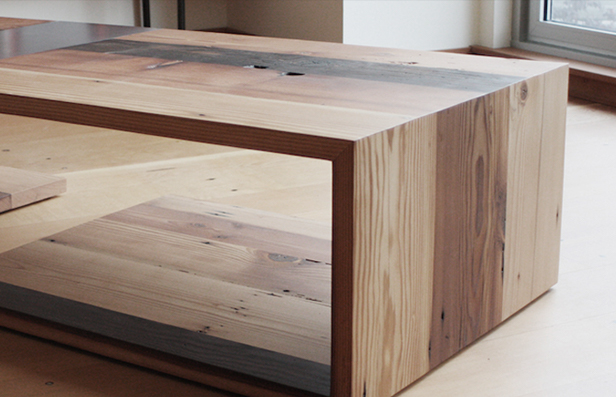
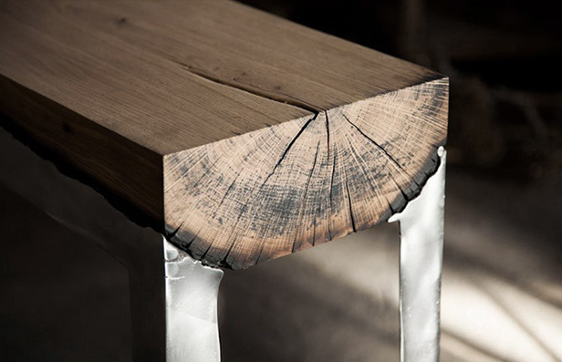

About
-
Furniture
Wooder utilizes materials otherwise left behind, rendered useless in their original intent. By creating new pieces made of reclaimed barnwood
Learn more  -
Decor
We make all types of wooden decor as per design given by Architect,Interior designer, contractor which is suitable your premises.
Learn more

wooder – is quality
We create unique design objects made of rare wood, specially under the order. Look at the short video about our work.

we do the design of any complexity
This is a team of professionals that make the furniture and wood décor high standard. Creating modern designs. Adhering to the global quality standards. And we are doing work with love.
watch videoAbout us
We are a team of professionals in the wood processing and the creation of wooden furniture of the highest class